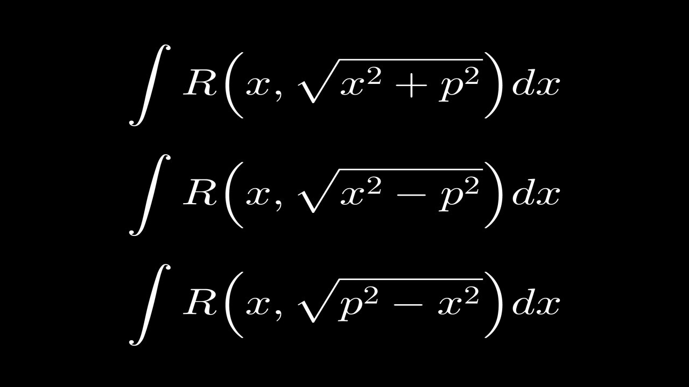
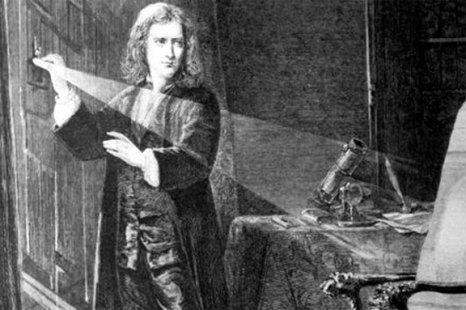
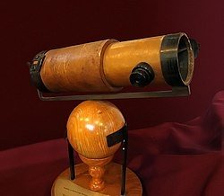

Научни открития
Закони на движението – Нютон формулира три основни закона на движението, които обясняват как телата се движат под
въздействие на различни сили. Те са
основополагащи за класическата механика и дават възможност за предсказване на движението на обекти.
Закон за всемирното привличане – Нютон открива, че всяко тяло във Вселената привлича всяко друго тяло с сила, пропорционална на произведението от
техните маси и обратно пропорционална на квадрата разстоянието между тях. Това откритие е основополагающо за разбирането на гравитацията.
Диференциално и интегрално смятане – Нютон (независимо от Лайбниц) разработва основите на диференциалното и интегралното смятане,
което е основно за решаването на много физически проблеми и формира основата на математическия анализ.

Разширение на теорията за светлината – Нютон работи и върху теорията за светлината и цветовете. Той показва, че
бялата светлина е съставена от различни цветове и създава теоретичен модел за тяхното пречупване при преминаване през призма.

Оптика – Нютон извършва значителни изследвания в областта на оптиката, като подобрява теорията за пречупването и разпространението на светлината.
Той също така изследва и създава първия телескоп с огледала, който по-късно става известен като "Нютонов телескоп".
